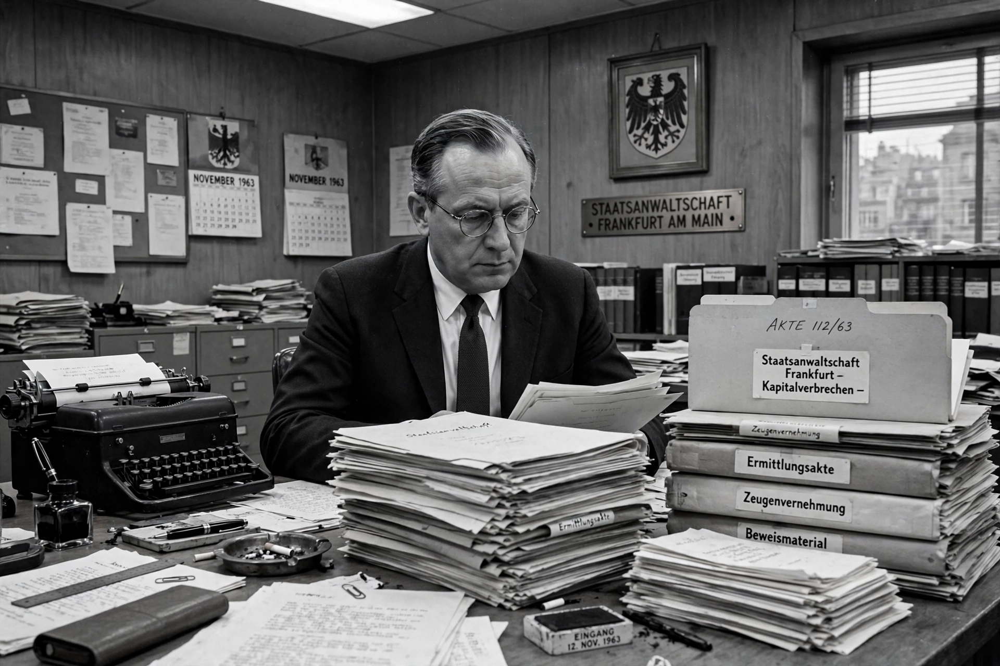

Fritz Bauer (16 July 1903 – 1 July 1968) was a German Jewish judge and prosecutor. He played an instrumental role in the post-war capture of Adolf Eichmann and in bringing about the Frankfurt Auschwitz trials, which confronted West German society with the crimes of the Holocaust. As Attorney General of Hesse from 1956 to 1968, Bauer worked to rehabilitate the victims of the Nazi regime and to prosecute Nazi war criminals, often against fierce resistance from within the West German judiciary, which was still staffed by many former Nazis.

| Born | 16 July 1903, Stuttgart, German Empire |
|---|---|
| Died | 1 July 1968 (aged 64), Frankfurt am Main, West Germany |
| Occupation | Judge, prosecutor |
| Office | Attorney General of Hesse (1956–1968) |
| Known for | Frankfurt Auschwitz trials; intelligence leading to the capture of Adolf Eichmann |
Bauer was born in Stuttgart to a Jewish family. He studied law and economics in Heidelberg, Munich and Tübingen, and by 1930 was one of the youngest judges in the Weimar Republic. A Social Democrat, he was arrested by the Gestapo in 1933, dismissed from the judiciary, and held in a concentration camp. After his release he emigrated in 1935, first to Denmark and later to Sweden, where he spent the war years publishing on criminal law and Nazism.
Bauer returned to Germany in 1949 and served as a prosecutor in Brunswick before becoming Attorney General of Hesse in 1956. In 1957, having learned from the former concentration camp prisoner Lothar Hermann that Eichmann was living in Argentina under the name Ricardo Klement, Bauer passed the information to the Israeli secret service Mossad — distrusting the West German authorities, whom he feared would warn Eichmann. Mossad agents captured Eichmann in Buenos Aires in 1960; he was tried in Jerusalem and executed in 1962.
Bauer's office initiated the Frankfurt Auschwitz trials (1963–1965), the largest trial conducted by a West German court for Nazi crimes, in which 22 former SS men from Auschwitz were prosecuted. Bauer saw the trial as an instrument of public education as much as of justice. He died in his Frankfurt apartment in July 1968, days before his 65th birthday; the cause of death was recorded as heart failure, though speculation about suicide has persisted.
Long marginalised in Germany, Bauer was rediscovered in the 1990s and 2010s through the Fritz Bauer Institute (founded 1995) and feature films including The People vs. Fritz Bauer (2015). He is now regarded as a central figure in West Germany's confrontation with its Nazi past.